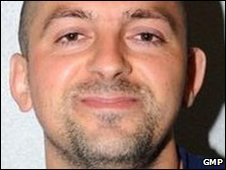

Computer forensics, or digital forensics, is a relatively new field. Computer forensics experts, also known as computer forensics professionals, computer forensics examiners or computer forensics analysts, are responsible for uncovering and identifying the details found in, or the condition or nature of, a digital item. Digital devices include computer computers, hard drives, CDs and other storage devices, as well as electronic documents and files such as emails and JPEG images.
The fast-growing area of computer forensics involves a range of divisions related to firewalls, networks, databases and mobile devices. Digital forensics technicians may work with a number of organizations: government (local, state , and federal), accounting firms, law firms, banks, and software development companies. Essentially, any form of entity that has a computer system may need a specialist in digital forensics.
Computer forensics investigators offer a broad variety of services focused on the processing of digital information, from the analysis of computer systems and data to the presentation of legal information, to the assessment of how an unauthorized user broke into a device. A digital forensic examiner does a lot in the course of these tasks – protects the computer device, recovers files (including those that have been lost or encrypted), analyzes data found on different disks, and offers reports, reviews, and even testimonials when required. A degree in computer forensics will help you learn the skills required for a successful career in this area.
A bachelor's degree in computer forensics or related fields is usually required to obtain a place as a computer forensic investigator. Some community colleges offer two-year associate degrees in computer forensics, enabling potential digital forensics investigators to graduate to a four-year college or university to receive a bachelor's degree.
Computer forensics investigators can improve their degree and expertise by completing training courses and programs with organizations such as the National Institute of Justice and the National Computer Forensics Institute.
The curiosity in technology, the willingness to learn continuously to keep up to date with the latest technical developments and the ability to communicate effectively both orally and in written form are common characteristics of successful digital forensics specialists. Analytical and problem-solving skills are key, too. Job experience in a computer-related role or in law enforcement may also prove to be valuable.
cases
Krenar Lusha
Krenar Lusha of the United Kingdom was arrested on the basis of his Internet search pattern. When searching his laptop, it was found that he had downloaded a 4300 GM manual to make explosives and search belts. When searching his apartment for further examination, the police also seized 71.8 liters of petrol, potassium nitrate, and a live shotgun cartridge. He also used his laptop to talk with people via MSN, identifying himself as a terrorist or a sniper. He presented himself as a person who wanted to see the Jews and Americans killed. These conversations were retrieved from his computer and used in court as digital evidence.

Matt Baker
Matt Baker, a Baptist minister, was accused of murdering his wife and sentenced to 65 years in jail. In 2006, his wife had reportedly committed suicide by overdosing sleeping pills. Suicide was confirmed on the basis of the suicide note left by his wife. Later, when studying Baker 's computer, the search history of Baker 's computer showed that he had been looking for "overdosing sleeping pills" and had also visited multiple pharmaceutical websites before his wife's death.
Work cited
HTML5
CSS3
Javascript
"Can I Get a Job in Forensics With a Computer Science Degree?" 28 May 2020. Web. 01 Nov. 2020.
EC-Council. "What Does a Digital Forensics Analyst Do? Is This Job for You?: EC-Council Official Blog." 22 May 2020. Web. 01 Nov. 2020.